This part presents a visualization program that has two modes of operation.
In the first mode (initial), the program's operation completely coincides with the work of the program
from the first part, which demonstrates the visualization of the Stern-Gerlach experiment.
Using the trigger button, the program can be switched to the operating mode in which the visualization
will be shown. the classical Bloch sphere.
Using the Rotate X, Y, Z buttons, you can rotate the Bloch vector around
corresponding axes.
Using the Rotate N+ and Rotate N- buttons, you can rotate the Bloch vector around
arbitrary axis. The position of this axises can be set using the angles "Axis θ" and "Axis φ".
Pressing the X, Y, Z and H buttons corresponds to the action of the Pauli gates X, Y, Z
and the Hadamard gate H.
Sphere rotation - left mouse button drag
Sphere size - middle mouse button drag, or mousewheel
Sphere movement on screen - right mouse button drag
Вращение колесика мыши вперед/назад позволяет уменьшить/увеличить размер трехмрного объекта на экране.
Если нажать левую клавшу мыши то при ее движении трехмерный объект будет вращаться на экране.
Если нажать правую клавшу мыши то при ее движении трехмерный объект будет двигатья по экрану.
В данной части представлена программа визуализации имеющая два режима работы.
В первом режиме (исходном) работа программы полностью совпадает с работой програмы из первой части, которая
демонстрирует визуализацию эксперимента Ш-Г.
При помощи триггерной кнопки
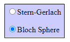
программу можно переключить в режим работы в котором будет показана визуализация классической сферы Блоха.
Произведем это переключение.
Два режима объединены в одной программе для того, чтобы показать, что эксперимент Ш-Г и сфера Блоха
имеют между собой (на мой взгляд) достаточно глубокую связь.
Отличие заключается в том, что теперь мы предполагаем, что спин на сфере Блоха (второй режим) всегда приготовлен вертикально вверх
и его полярный угол равен θprepare spin = 0 (в первом режиме спин прготовляся вдоль вектора A).
Измерение, как и раньше, происходит по направллению вектора D с полярным углом равным θdevice.
Исходя из этих предположений получаем, что α = θdevice и теперь можно
обозначить угол α просто как α = θdevice = θ.
Вектор D (от слова Device) в первом режиме работы данной програмы используетсяся для того, чтобы подчеркнуть
процесс проведения измерения прибором Ш-Г вдоль этого вектора. Во втором режиме работы этот вектор обозначен
как B. Вектор B - это вектор Блоха (Bloch vector). Этот вектор является обычным
трехмерным вектором задающим координаты точки на сфере. Кнопка Measurement во втором режиме не нужна,
так как не требуется приготовлять спин. Измерение спина происходит сразу при изменении углов задающих
положение вектора B.
Во втором режиме работы измерение спина производится вдоль вектора B - вектора Блоха.
Рассмотрим режим в котором программа отображает сферу Блоха. Это геометрическое представление квантового состояния
в двухуровневой системе, которое носит название кубит. Сама сфера получила наазвание в честь швейцарского физика Феликса Блоха.
Но часто эта сфера, когда она используется при описании стереографической проекции, носит название сферы Римана,
а при описании состояния поляризации света ее обычно называют сферой Пуанкаре.
Кубит является простейшей квантово-механической системой и обобщает классический бит.
Так как кубит представляет собой двухуровневую систему то он может иметь два возможных значения 0 и 1:
Фактически это уже рассмотренные в предыдущей части квантовые состояния |up〉 и |dn〉. Основная новая особенность кубита по сравнению
с классическим битом – это возможность иметь состояния суперпозиции значений 0 и 1.
То есть кубит может находиться в произвольной суперпозиции двух базовых состояний |0〉 и |1〉.
Математическое описание представлено в терминах суммы двух базисных векторов,
взвешенных по (комплексным) амплитудам. Это соответствует 2-мерному вектору с комплексными коэффициентами а и b,
который является элементом векторного пространства C2. Такая суперпозиция может быть истолкована
как интерференция двух возможностей. Квантовое остояние кубита описывается как
|ψ〉 = a·|up〉 + b·|dn〉 (*)
или
|ψ〉 = a⋅|0〉 + b⋅|1〉 (**)
В выражении (*) базисные векторы |up〉 и |dn〉 ортогональны друг другу,
а в выражении (**) базис представлен парой квантовых состояний |0〉 и |1〉 не ортогональных
друг другу, но разнонаправленных и лежащих на одной прямой. Но фактически вектор |1〉
это тот же вектор |dn〉 только повернутый на 90°:
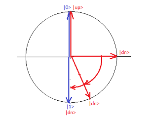
Такое представление вектора состояния
|ψ〉 = a⋅|0〉 + b⋅|1〉
сделано для того, чтобы на сфере Блоха можно было отобразить истинный размер углов θ, а не их половинный размер θ/2.
И следует помнить, что на самом деле базисные векторы |0〉 и |1〉 являются ортогональными векторами
несмотря на то, что они показаны лежащими на одной прямой. Это ничто иное, как просто условность принятая
специально для изображения векторов состояния на сфере Блоха.
Вектор состояния |ψ〉 определяется суммой двух векторов
|ψ〉 = a⋅|0〉 + b⋅|1〉
В этой формуле |0〉 и |1〉 являются базисными векторами. Коэффициенты a и b стоящие
перед базисными векторами являются в общем случае комплексными числами.
Эти два числа называются амплитудами вероятности.
Как известно любое комплексное число можно записать в показательной форме.
Числа a и b в показательной форме выглядят следующим образом:
a = ra⋅eiφa
b = rb⋅eiφb
Вектор состояния |ψ〉 в этом случае примет следующий вид:
|ψ〉 = ra⋅eiφa|0〉 + rb⋅eiφb|1〉
Введем следующее обозначение
φ = φb-φa
и, следовательно,
φb = φ + φa
Тогда предыдущее выражение для вектора состояния |ψ〉 можно переписать в таком виде
|ψ〉 = ra⋅eiφa|0〉 + rb⋅eiφb|1〉 =
ra⋅eiφa|0〉 + rb⋅eiφ⋅eiφa|1〉 =
eiφa(ra|0〉 + rb⋅eiφ|1〉)
Для вектора состояния имеет значение только отношение в котором находятся между собой
амплитуды вероятности. Поэтому можно безболезненно умножить обе состовляющие вектора |ψ〉 на
одно и то же число равное e-iφa. После этого умножения получим
следующее выражение для |ψ〉
|ψ〉 = ra⋅|0〉 + rb⋅eiφ⋅|1〉
Заметим, что уможение вектора состояния |ψ〉 можно производить на любое число - действительное, комплексное или
чисто мнимое - физический смысл от этого не изменится.
Угол φa имеет название "глобальная фаза". Так как глобальная фаза появляется
только в результате математических преобразований, то она не имеет физического смысла и поэтому ее можно
в дальнейшем не учитывать. В отличие от глобальной фазы угол φ имеет прямой физический смысл, который
определяет разность фаз между компонентами вектора состояния. Угол φ имеет собой название "локальная фаза".
Локальная фаза играет большую роль при интерференции электронов.
Амплитуды вероятности a и b обычно нормируются на 1.
Следовательно и сумма ra2 + rb2 также должна
быть равной 1:
ra2 + rb2 = 1
Исходя из этого удобно ввести следующую нормировку (т. к. всегда cos2+sin2=1)
ra = cos(θ/2)
rb = sin(θ/2)
Тогда выражение для вектора состояния |ψ〉 примет вид
|ψ〉 = cos(θ/2)|0〉 + sin(θ/2)⋅eiφ|1〉
Рассмотрим сферу имеющюю единичный радиус и параметризацию поверхности в терминах θ и φ, которые фактически
являются сферическими полярныыми координатами для поверхности сферы.
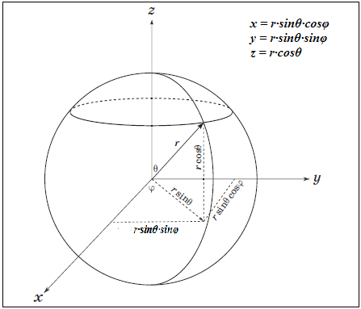
Каждому вектору (он называется вектором Блоха), который расположен на сфере соответствует вектор квантового состояния |ψ〉.
Задавая вектор Блоха (координаты θ и φ на сфере) мы получаем (после соответствующих вычислений) вектор
квантового состояния |ψ〉, значение которого отображается в программе визуализации.
Логические операции над кубитами, так же как и в классической электронике, осуществляют специальные
логические элементы, называемые квантовыми вентилями. Операцию, выполняемую любым однокубитным вентилем,
можно представить как поворот вектора, характеризующего состояние кубита, в другую точку сферы Блоха.
Данная программа позволяет визуально наблюдать как работают квантовые вращения и некоторые наиболее известные вентили.
Так как каждая точка на поверхности сферы задает единичный вектор в спинорном пространстве,
то найдем координаты этих векторов на сфере. Для этого рассмотрим еще раз процесс измерения.
В квантовой механике те величины, которые может зарегистрировать исследователь, приборами или
визуально, носят название наблюдаемых величин или просто наблюдаемых.
В процессе измерения спина электрона прибором Штерна-Герлаха получается только одно из значений
наблюдаемой величины - либо +1 либо -1. Других значений, измеряемых прибором, быть не может.
В эксперименте нас интересуют вероятности получения +1 и -1 относительно приготовленного
состояния. Состояние, в котором происходит приготовление спина, задается вектором исходящим из
центра сферы и заканчивающимся на поверхности сферы. Состояние, в котором происходит измерение спина,
также задается вектором исходящим из центра сферы и заканчивающимся на ее поверхности.
Поэтому задача состоит в вычислении концов векторов лежащих на сфере - в спинорном пространстве.
В квантовой механике спина это происходит следующим образом.
Вводится понятие оператора. Будем считать, что оператор это квадратная матрица 2x2.
В качестве постулата принимается тот факт, что наблюдаемым величинам (в данном случае +1 и -1)
соответствуют эрмитовы операторы. Как определяются эрмитовы операторы можно прочитать во
множестве книг и статей и поэтому не будем на этом останавливаться.
Для каждого направления на сфере существует свой оператор. Для этого оператора можно
найти специальный вектор - собственный вектор.
Одними из основных операторов в квантовой механике являются так называемые матрицы Паули.
Рассмотрим их вкратце.
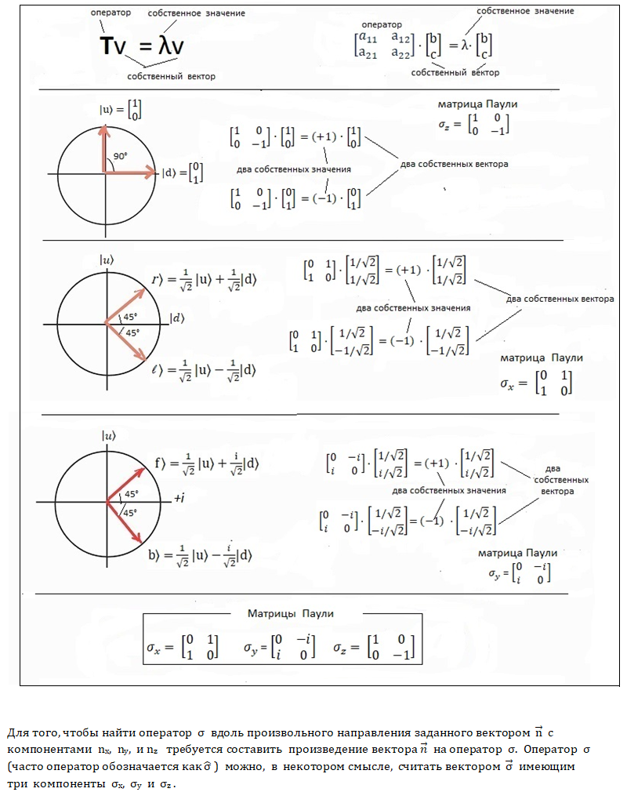
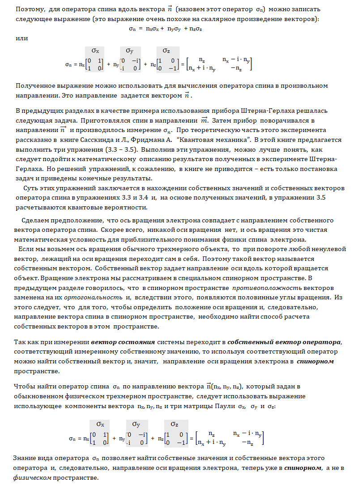
В Части Ⅳ
приведено решение упражнений 3.3, 3.4 и 3.5 из книги Сасскинда и Фридмана "Квантовая механика.
Одной из основных областей, где находят применение матрицы Паули являются квантовые вращения.
Но, перед тем как заняться непосредственно вращениями, необходимо рассмотреть, казалось бы, несвязанную с этим тему -
возведение числа в степень, когда в качестве показателя степени выступает матрица. Рассмотрим этот вопрос подробнее.
Матрицы Паули σx, σx, σx, которые в дальнейшем мы будем обозначать также как X, Y и Z , когда они
возведены в степень, то они порождают операторы вращения, которые поворачивают
вектор Блоха = ( sin(θ)cos(φ), sin(θ)sin(φ), cos(θ) ) вокруг осей x, y и z на заданный угол α:
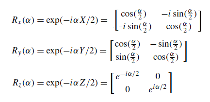
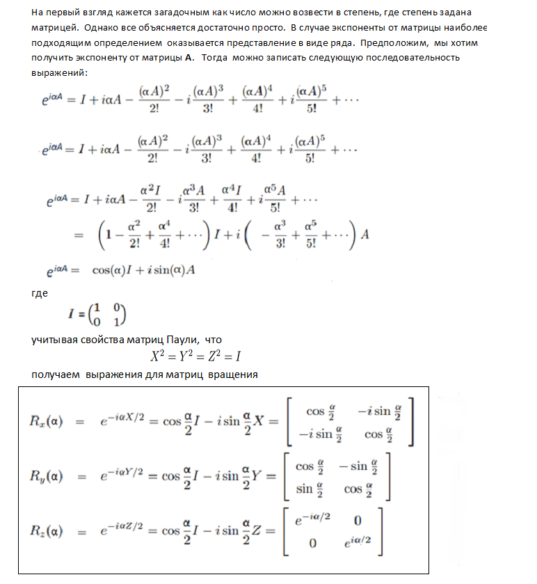
Может также возникнуть вопрс - почему для осуществления поворотов можно использовать возведение в степень.
Для ответа на этот вопрос следует вспомнить, что экспоненту можно рассматривать как оператор выполняющий
поворот вектора
eαi = cos(α) + i·sin(α)
В программе визуализации данной главы можно наблюдать вращения вектора Блоха вокруг осей X, Y и Z. Вращения
выполняются путем нажатия кнопок "Rotate X+" и "Rotate X-", "Rotate Y+" и "Rotate Y-",
"Rotate Z+" и "Rotate Z-".
Можно задать три значения шага вращения при помощи кнопок "2°", "5°" и "10°". На сфере Блоха можно будет
при этом увидеть соответствующие точки. Также будут выводиться значения вектора состояния. Одновременно на комплексной
плоскости z = 0 отобразятся точки (черный цвет и чуть меньшего размера) получившиеся в результате
дробно-линейного преобразования (смотри текст ниже).
В приведенной программе можно осуществить вращение и вокруг произвольной пространственной оси. Для этой цели
служат кнопки "Rotate N+" и "Rotate N-". Положение оси вращения задается при помощи углов
"Angles axis rotation" (Axis θ и Axis φ). При помощи вращения вокруг произвольной пространственной оси
можно имитировать действие любого однокубитного квантового вентиля.
Стереть с экрана построенные в результате вращения точки можно нажав клавишу "Erase all points".
Предположим, что исходное квантовое состояние с углами θ и φ задающими положение вектора Блоха равно
|ψ〉 = cos(θ/2)|0〉 + sin(θ/2)⋅eiφ|1〉
Тогда квантовое состояние после поворота вокруг оси X можно на угол α рассчитать по формуле
|ψ'〉 = Rx(α)· |ψ〉 Тогда новое квантовое состояние |ψ'〉 будет определяться вектором Блоха
с углами θ' и φ' |ψ'〉 = cos(θ'/2)|0〉 + sin(θ'/2)⋅eiφ'|1〉
В файле button.js в функции function X_plus() можно увидеть программу расчета
квантового состояния |ψ'〉 и углов θ' и φ' с комментариями к расчету
применительно к повороту вокруг оси X. Расчет поворотов вокруг осей Y и Z осуществляется подобным образом.
Перейдем к рассмотрению матриц Паули как квантовых вентилей. Также рассмотрим вентиль Адамара H.
Вентиль X осуществляет поворот вектора Блоха на 180°
вокруг оси X, вентиль Y поворот на 180° вокруг оси Y, а вентиль Z поворот на 180° вокруг оси Z. В
соответствии с поворотами вектора Блоха изменяются квантовые состояния |ψ〉. Для визуализации поворотов используются
кнопки "X", "Y" и "Z".
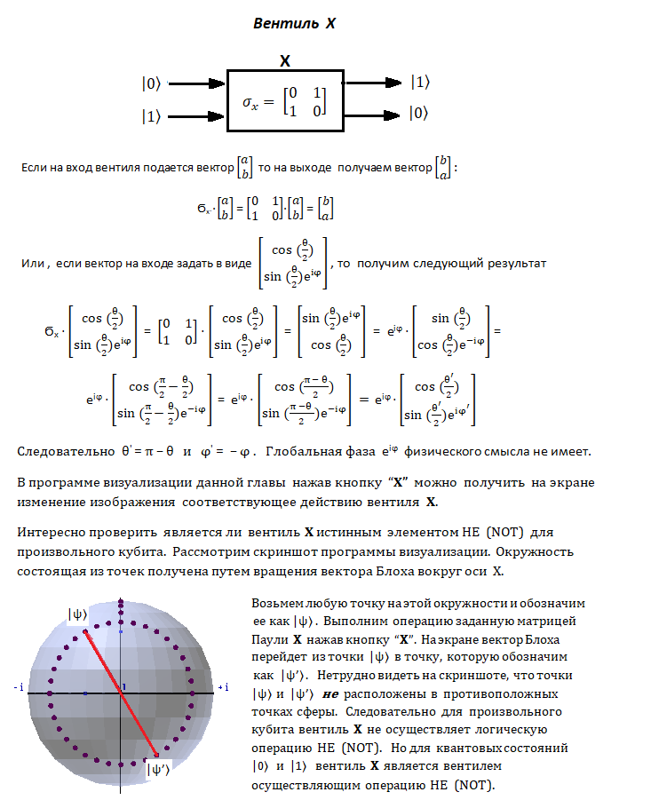
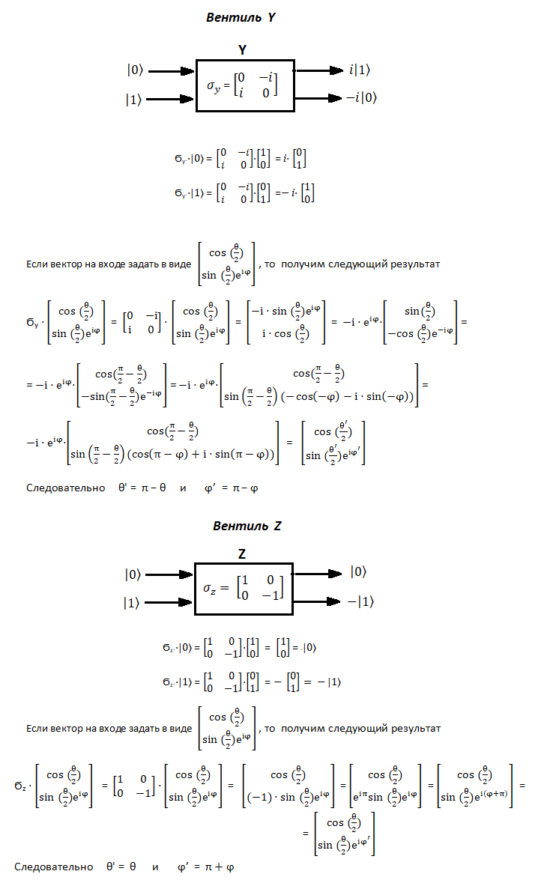
По ссылке
можно найти хорошие видеолекции по матрицам Паули, спину и сфере Блоха. Английский язык в них не очень сложен и также можно
включить субтитры с переводом на русский. Лектор подробно приводит все выкладки на доске.
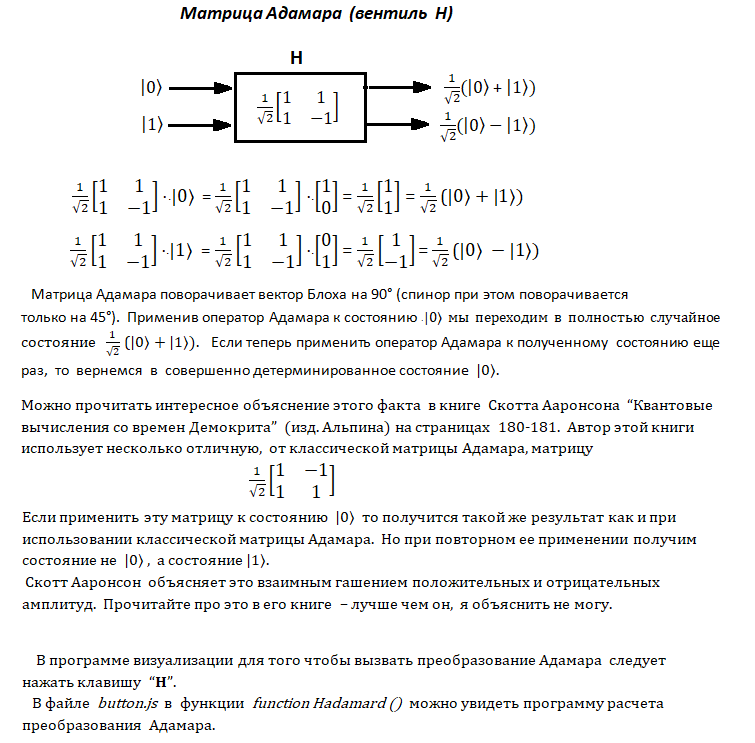
Рассмотрим еще один подход к сфере Блоха. Ниже приведен рисунок показывающий стереографическую проекцию единичной сферы
с южного полюса S на плоскость z = 0. Стереографическая проекция отображает
северное полушарие на область лежащую внутри единичной окружности.
Южное полушарие отображается на область за пределами единичной окружности.
Экватор совпадает с единичной окружностью.
Пусть O(0, 0, 0) - центр сферы, N(0, 0, 1) - северный полюс, а S(0, 0, -1) южный полюс.
Пусть P’(x’, y’, 0) - пересечение прямой SP с экваториальной плоскостью z = 0,
а Q(0, 0, z) – проекция P(x, y, z) на ось z. Точка P’ называется стереографической проекцией точки P.
Из подобных треугольников SOP’ и SQP мы находим:
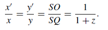
Теперь введем в плоскости z = 0 комплексную переменную ζ
В программе визуализации комплексная переменная ζ обозначена стандартным образом принятым для
комплексных чисел ζ = z = x + iy. В этом выражении x и y являются коэффициентами перед
действительной и мнимой частями переменной z, и уже не пространственными координатами (x, y, z).
В программе визуализации комплексная плоскость расположена на пространственной плоскости z = 0.
Комплексное число ζ = z = x + iy находится чисто геометрически как точка P' пересечения
проецирующей прямой PS с плоскостью z = 0.
Это так называемое дробно-линейное преобразование.
В программе приведенной в этой части можно увидеть
это преобразование при отображении поворотов на сфере на комплексную плоскость.
Вращая вектор Блоха, можно увидеть, что окружности на сфере отображаются в окружности на комплексной плоскости z = 0,
которая проходит горизонтально через центр сферы (имеет серый цвет).
Такие отображения являются характерным признаком конформного отбражения (дробно-линейного преобразования).
На следующем скриншоте показаны окружности на сфере полученные путем вращения вектора Блоха вокруг осей X, Y и Z
и соответствующие им окружности на комплексной плоскости (они отображены более мелкими черными точками).
c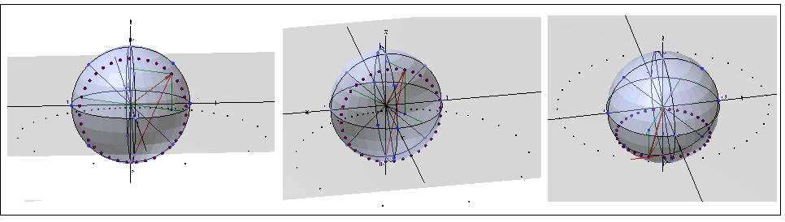
Таким образом любая точка на сфере отображается на комплексную плоскость. Единственная точка
на сфере - южный полюс S - не имеет образа на комплексной плоскости лежащей
на пространственной плоскости z = 0.
Если |ψ〉 = a⋅|0〉 + b⋅|1〉 то мы можем разделить правую часть равенства на коэффициент a.
Физическое состояние спина не изменится так значение имеет только отношние числа b к числу a.
В результате получим |ψ〉 = a⋅|0〉 + (b/a)⋅|1〉. Число (b/a) - это обыкновенное комплексное число.
Но теперь, если (b/a) принимает значение равное ∞, то спин направлен вертикально вниз.
Когда число задают в виде отношения двух других чисел, то такой способ называют введением
однородных координат. Подробно про это рассказывается в кигах Роджера Пенроуза.
Таким образом каждая точка сферы имеет свое отображение на комплексной плоскости. Например, задав в программе визуализации
в GUI полярный угол электрона θ° = 0 получим
z = 0 + 0·i,
а задав полярный угол электрона θ = 180° получим z = ∞.
На видеоролике со сферой Римана Riemann Sphere
показано отображение точек сферы на плоскость с северного полюса сферы.